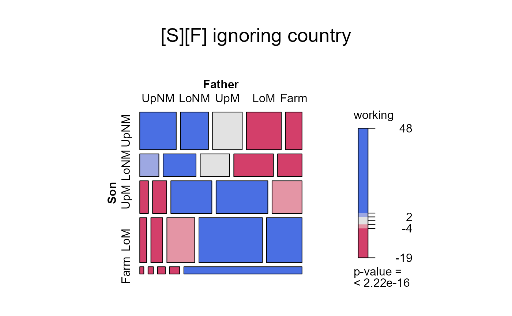
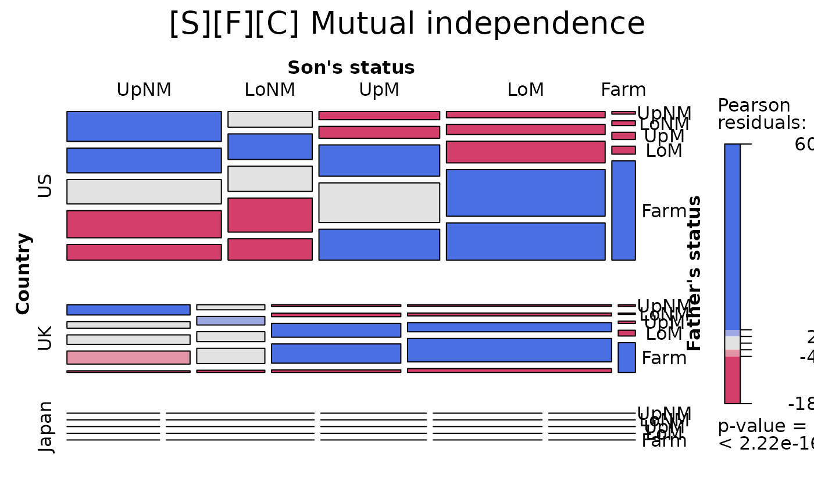
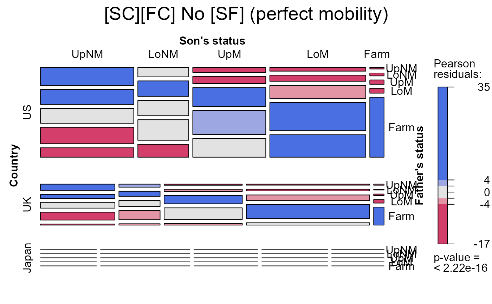
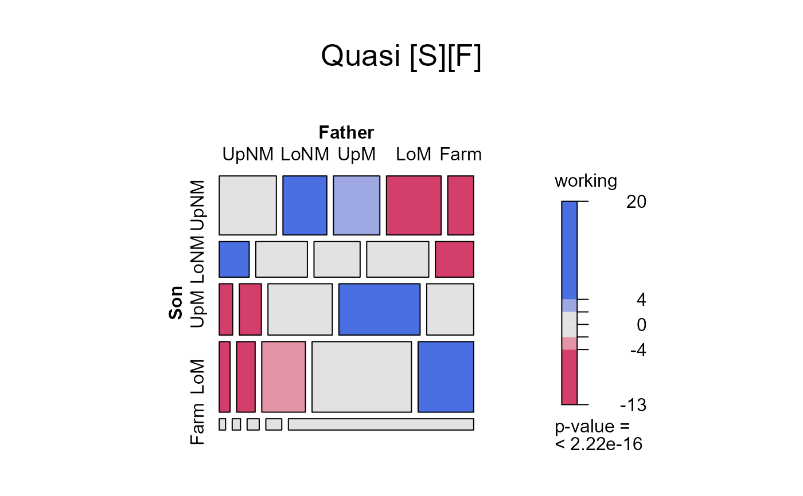

Occupational Mobility in Three Countries
Yamaguchi87.RdYamaguchi (1987) presented this three-way frequency table, cross-classifying occupational categories of sons and fathers in the United States, United Kingdom and Japan. This data set has become a classic for models comparing two-way mobility tables across layers corresponding to countries, groups or time (e.g., Goodman and Hout, 1998; Xie, 1992).
The US data were derived from the 1973 OCG-II survey; those for the UK from the 1972 Oxford Social Mobility Survey; those for Japan came from the 1975 Social Stratification and Mobility survey. They pertain to men aged 20-64.
Usage
data(Yamaguchi87)Format
A frequency data frame with 75 observations on the following 4 variables. The total sample size is 28887.
Sona factor with levels
UpNMLoNMUpMLoMFarmFathera factor with levels
UpNMLoNMUpMLoMFarmCountrya factor with levels
USUKJapanFreqa numeric vector
Details
Five status categories -- upper and lower
nonmanuals (UpNM, LoNM),
upper and lower manuals (UpM, LoM),
and Farm) are used for both fathers' occupations and
sons' occupations.
Upper nonmanuals are professionals, managers, and officials; lower nonmanuals are proprietors, sales workers, and clerical workers; upper manuals are skilled workers; lower manuals are semi-skilled and unskilled nonfarm workers; and farm workers are farmers and farm laborers.
Some of the models from Xie (1992), Table 1, are fit in demo(yamaguchi-xie).
Source
Yamaguchi, K. (1987). Models for comparing mobility tables: toward parsimony and substance, American Sociological Review, vol. 52 (Aug.), 482-494, Table 1
References
Goodman, L. A. and Hout, M. (1998). Statistical Methods and Graphical Displays for Analyzing How the Association Between Two Qualitative Variables Differs Among Countries, Among Groups, Or Over Time: A Modified Regression-Type Approach. Sociological Methodology, 28 (1), 175-230.
Xie, Yu (1992). The log-multiplicative layer effect model for comparing mobility tables. American Sociological Review, 57 (June), 380-395.
Examples
data(Yamaguchi87)
# reproduce Table 1
structable(~ Father + Son + Country, Yamaguchi87)
#> Son UpNM LoNM UpM LoM Farm
#> Father Country
#> UpNM US 1275 364 274 272 17
#> UK 474 129 87 124 11
#> Japan 127 101 24 30 12
#> LoNM US 1055 597 394 443 31
#> UK 300 218 171 220 8
#> Japan 86 207 64 61 13
#> UpM US 1043 587 1045 951 47
#> UK 438 254 669 703 16
#> Japan 43 73 122 60 13
#> LoM US 1159 791 1323 2046 52
#> UK 601 388 932 1789 37
#> Japan 35 51 62 66 11
#> Farm US 666 496 1031 1632 646
#> UK 76 56 125 295 191
#> Japan 109 206 184 253 325
# create table form
Yama.tab <- xtabs(Freq ~ Son + Father + Country, data=Yamaguchi87)
# define mosaic labeling_args for convenient reuse in 3-way displays
largs <- list(rot_labels=c(right=0), offset_varnames = c(right = 0.6),
offset_labels = c(right = 0.2),
set_varnames = c(Son="Son's status", Father="Father's status")
)
###################################
# Fit some models & display mosaics
# Mutual independence
yama.indep <- glm(Freq ~ Son + Father + Country,
data=Yamaguchi87,
family=poisson)
anova(yama.indep)
#> Analysis of Deviance Table
#>
#> Model: poisson, link: log
#>
#> Response: Freq
#>
#> Terms added sequentially (first to last)
#>
#>
#> Df Deviance Resid. Df Resid. Dev
#> NULL 74 34313
#> Son 4 7034.4 70 27279
#> Father 4 3859.2 66 23419
#> Country 2 14231.1 64 9188
mosaic(yama.indep, ~Son+Father, main="[S][F] ignoring country")

mosaic(yama.indep, ~Country + Son + Father, condvars="Country",
labeling_args=largs,
main='[S][F][C] Mutual independence')

# no association between S and F given country ('perfect mobility')
# asserts same associations for all countries
yama.noRC <- glm(Freq ~ (Son + Father) * Country,
data=Yamaguchi87,
family=poisson)
anova(yama.noRC)
#> Analysis of Deviance Table
#>
#> Model: poisson, link: log
#>
#> Response: Freq
#>
#> Terms added sequentially (first to last)
#>
#>
#> Df Deviance Resid. Df Resid. Dev
#> NULL 74 34313
#> Son 4 7034.4 70 27279
#> Father 4 3859.2 66 23419
#> Country 2 14231.1 64 9188
#> Son:Country 8 1062.9 56 8125
#> Father:Country 8 2533.8 48 5592
mosaic(yama.noRC, ~~Country + Son + Father, condvars="Country",
labeling_args=largs,
main="[SC][FC] No [SF] (perfect mobility)")

# ignore diagonal cells
yama.quasi <- update(yama.noRC, ~ . + Diag(Son,Father):Country)
anova(yama.quasi)
#> Analysis of Deviance Table
#>
#> Model: poisson, link: log
#>
#> Response: Freq
#>
#> Terms added sequentially (first to last)
#>
#>
#> Df Deviance Resid. Df Resid. Dev
#> NULL 74 34313
#> Son 4 7034.4 70 27279
#> Father 4 3859.2 66 23419
#> Country 2 14231.1 64 9188
#> Son:Country 8 1062.9 56 8125
#> Father:Country 8 2533.8 48 5592
#> Country:Diag(Son, Father) 15 4255.3 33 1336
mosaic(yama.quasi, ~Son + Father, main="Quasi [S][F]")

## see also:
# demo(yamaguchi-xie)
##